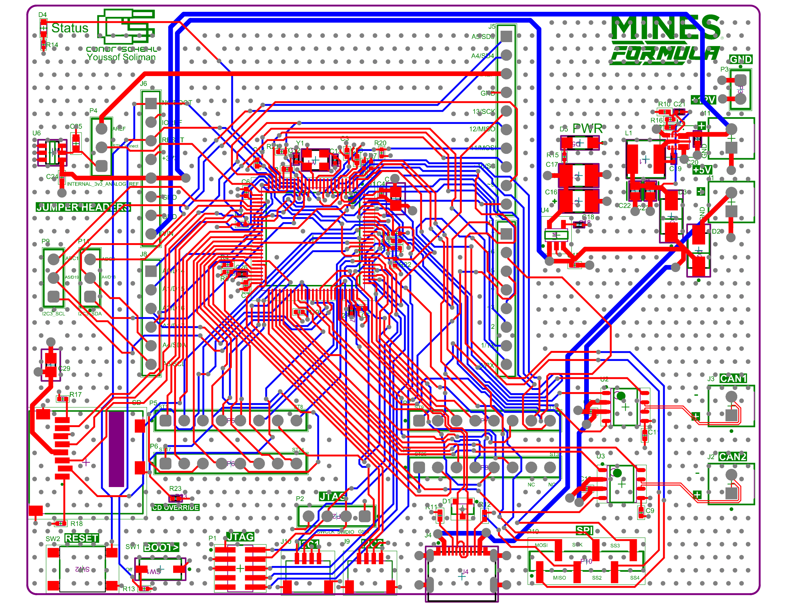

Custom STM32 Microcontroller Development Board
4-Layer mixed-signal architecture for rapid sensor testing

Click diagram to expand
The Objective
Commercial off-the-shelf development boards are costly and often misaligned with the team's specific system architecture. This custom 4-layer board was designed to maximize GPIO access while integrating Arduino shield compatibility. This cross-compatibility enabled rapid sensor testing, knowledge transfer, and firmware development well before the final custom sensor PCBs were manufactured.
System Architecture
The architecture transitioned from the team's legacy STM32F1 microcontrollers to the high-performance STM32F7 series. This upgrade provided the necessary pin density for current requirements while future-proofing the design with hardware Ethernet support for subsequent development cycles. To maintain strict budget controls and consolidate the team's Bill of Materials (BOM), the power delivery network and passive components were standardized using JLCPCB’s basic component library, eliminating extended placement fees while maintaining >80% power conversion efficiency.
Design Rationale & Challenges
Routing a dense, full-pinout development board required strict adherence to signal integrity principles. To prevent high-frequency ripple from coupling into sensitive communication lines, the USB 2.0 and CAN differential pairs were strategically routed on the opposite side of the MCU relative to the high-speed oscillator. Navigating the impedance-matched USB lines presented a significant spatial challenge; the required trace width was thicker than the CAN traces, complicating routing through tight clearances while attempting to minimize overall trace length.
Conversely, CAN bus routing was highly optimized through the strategic placement of transceivers near the board edge. During initial assembly, mechanical stress on a GPIO pin sheared a copper barrel and its associated trace. The connection was successfully restored via a bodge wire, ensuring full board functionality and demonstrating practical hardware rework capabilities.
Outcome & Validation
The board successfully served as the primary hardware testing platform for the electrical sub-team. Core clock functionality and thermal stability were functionally validated across various environmental states, ensuring the MCU maintained reliable execution timing for downstream data acquisition tasks.
Power Delivery Network

Click to view full resolution
MCU & Differential Interfaces

Click to view full resolution
Board Routing

Click to view full resolution
Interactive PCB Hardware
Click, drag, and zoom to inspect the board routing and component placement.